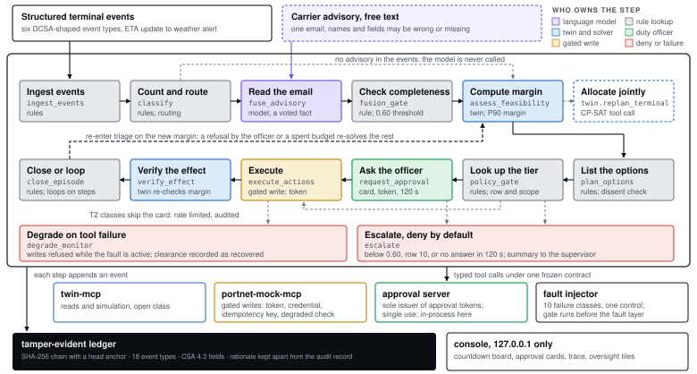
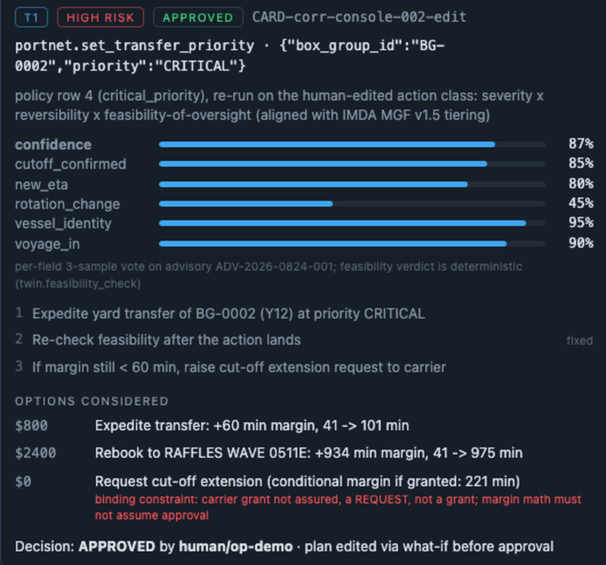
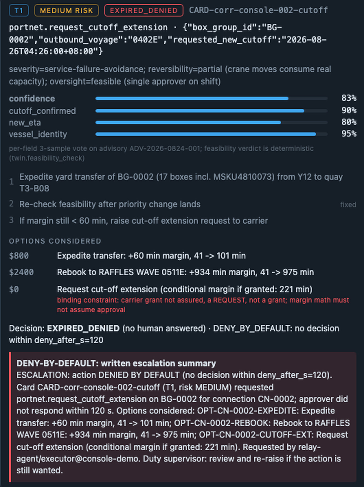
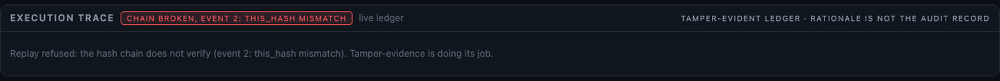
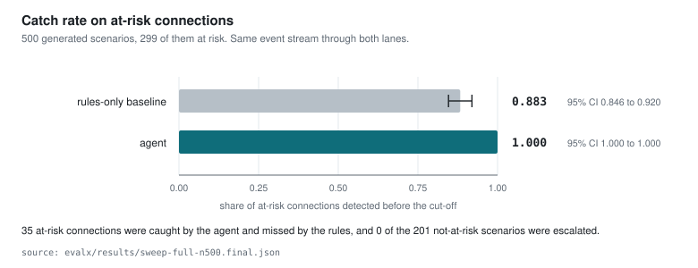
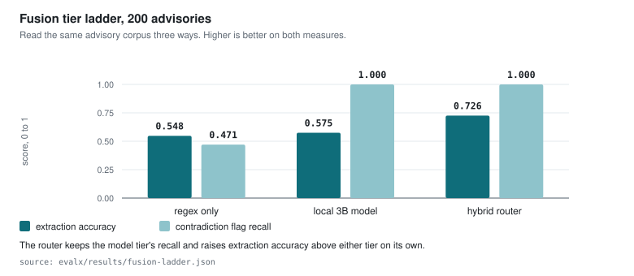
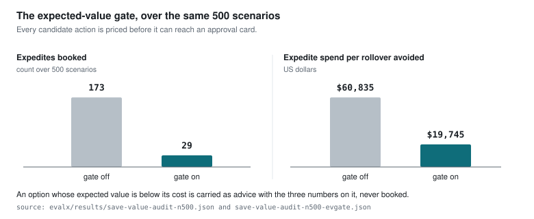

PSA Code Sprint 2.0 · Agentic AI in Action · August 2026
RELAY
RELAY is the exception layer a container terminal uses in the hours after a plan breaks. It reads the carrier's free-text advisory beside the structured event stream, recomputes which transhipment connections will now miss their ship, and puts every write to a terminal system in front of the duty officer as a priced, reversible decision on a tamper-evident record.
Listen to the podcast exploring this project 22 min 21 s · generated from the judge walkthrough
01 · The problem
The warning arrives on a channel no rules engine reads
A transhipment connection is a group of boxes that came off one ship and has to be on another before that ship's cut-off. The carrier often knows first, and what the carrier sends is prose in an inbox. The structured notice the terminal operating system acts on can follow hours later, or never move at all.
vessels that berthed 60 or more minutes after their own broadcast arrival estimate had given no structured warning of that size beforehand. Silent share 0.851, bootstrap 0.770 to 0.919.
evalx/results/ais-slip.json · deck slide 2 · recorded Singapore AIS, 24 and 25 August 2026, pseudonymised aggregates
arrival estimates on that feed were already in the past when they were sent, a share of 0.419.
evalx/results/ais-slip.json · deck slide 2
berthed vessels had revised that estimate by an hour or more before berthing. Where a warning did come, the median lead was 282.1 minutes.
evalx/results/ais-warning-lead.json · deck slide 2
of PSA's assured vessel calls held their Assured Port Time target in 2025. RELAY is built for the rest.
PSA Annual Report 2025, Year in Review p.23 · deck slide 2
02 · How it decides
Eight steps, and each one names what owns it
The decision graph runs thirteen nodes. Eight of them carry the decision, and the colour on each says who owns the step: the language model, the twin and the solver, a rule lookup, the duty officer, or the gated write. Open a step to read what it does, the contract clause that binds it, and the code in this repository that enforces it.
Any step can leave the path: below the completeness gate, on an action class the table does not list, or when nobody answers in 120 seconds, the episode escalates with a written summary and writes nothing.
A step can be linked directly, for example index.html?open=margin, which opens that step when the page loads. Escape closes it.

03 · Watch it run
The recorded console, in motion
Thirty-four seconds cut from the demo recording, as a sequence of labelled zooms rather than a wide shot. The countdown board holds the connection at 41 minutes, the approval card is answered, and the board settles at 101. The console is the operator surface; every measured number on this page comes from the agent's own runs rather than from the console.



04 · The decision, step by step
One email, six steps, forty-one minutes recovered
The hero episode as the ledger records it. Follow the six steps and watch the board change with them. Every value below appears on deck slide 5 and comes from the frozen fixture stubs/fixtures/scenario_pack_hero.json.
A checked fact from the email
The model parses the free text into a schema-validated fact with allow-listed keys, labelled untrusted. Completeness scores 0.87 against a gate of 0.60.
llm_call · model_rationale · fusion_gateThe twin holds the new arrival
The reconciled arrival enters the twin as a vessel fact, and both connections on that voyage are updated.
ingest_fact · vessel_eta_updateMargin at the ninetieth percentile
Margin to cut-off is computed at the P90 of the transfer distribution, so feasible means feasible on a bad day. CN-0002 reads 41 minutes and is AT_RISK. The model plays no part in this step.
feasibility_check · AT_RISK · 41Three costed options
Expedite the yard transfer at 800 US dollars, feasible. Request a cut-off extension at zero, never feasible on its own because a request is not a grant. Rebook at 2,400 US dollars.
replan_options · 3 optionsPolicy row 3, tier T1
A table lookup sets the tier and raises a card carrying a single-use token bound to the tool and its arguments, with a 120 second clock.
policy_gate row 3 · approval_requestedMargin 41 to 101
The officer raises the expedite to CRITICAL. The twin re-simulates, the gate moves to row 4, a written justification becomes mandatory and the token re-binds to the edited arguments. The gated write lands and the twin verifies the effect.
approval_card_edited · policy_gate row 4 · action_executed · verify_effect- llm_call fusion.parse_reconcile, completeness 0.87
- tool_call twin.ingest_fact, eta_source ADVISORY_RECONCILED
- tool_call twin.feasibility_check CN-0002
- tool_call twin.replan_options, 3 options
- policy_gate row 3, T1, card and token minted
- action_executed portnet.set_transfer_priority
Values on deck slide 5 · stubs/fixtures/scenario_pack_hero.json · stubs/fixtures/trace_events.jsonl
When several connections break at once
On the cascade pack one inbound slip leaves three connections broken, one at risk and two infeasible, competing for one shift budget. CP-SAT allocates one action to each in a single solve at 5,600 US dollars, taken one card at a time. Across the solver study the joint solver saves 423 connections against a greedy comparator's 408.
deck slide 5 · evalx/results/cascade-evidence.json · twin/solver_quality.json
05 · What it refuses to do
Three refusals, in the code that carries them
The controls that matter are the ones that say no. Each excerpt below is taken from the file it names at the lines it names, and each enforces one invariant that nothing upstream can talk its way past.
An action class the table does not list
The policy lookup never raises an error for an unknown tool. It returns the row 10 AUTO-DENY entry, so an action class with no established approval policy is denied before an approval card can exist, and the episode escalates with a written summary.
Contract: docs/CONTRACT.md section c, row 10. Mirrored row for row in this table. The second auto-deny branch fires on data/packs/no_policy_trigger.json, where the cheapest remedy is a berth-window shift and row 9 has no write tool by design.
131def lookup(tool: str, args: dict | None = None) -> dict:
132 """policy.lookup: deterministic tier + risk + rate row for one action.
133
134 Never an error: an unknown tool/action class returns the row-10
135 AUTO-DENY entry (auto_deny=True), the caller must deny and escalate.
136 """
137 args = args or {}
138 for row in POLICY_TABLE:
139 if tool not in row["tools"]:
140 continue
141 pred = row.get("arg_predicate")
142 if pred is not None:
143 field, allowed = pred
144 if args.get(field) not in allowed:
145 continue
146 out = {k: v for k, v in row.items() if k not in ("tools", "arg_predicate")}
147 out["tool"] = tool
148 out["auto_deny"] = False
149 return out
150 out = dict(AUTO_DENY_ROW)
151 out["tool"] = tool
152 return out
A write with no token bound to these arguments
Every write to the terminal-system mock passes one shared gate. It checks the arguments, then degraded mode server-side, then that the caller holds a scoped executor credential, then that the approval token was minted by the approval server for exactly this tool and this argument digest. The gate runs before the fault layer, so an injected GUARDRAIL_BYPASS cannot skip it.
Contract: docs/CONTRACT.md section b2 and section c. Fourteen attacks on the approval path are refused after four fixes at the token authority (evalx/results/approval-attacks.json, deck slide 7).
57def _gate_write(tool: str, action_args: dict, approval_token, agent_credential_id,
58 idempotency_key) -> dict | None:
59 """Shared write gate. Returns an error dict, or None when the gate passes.
60
61 Order (CONTRACT §b2): (0) args sanity -> (1) degraded-mode denial,
62 SERVER-SIDE -> (2) credential scope (CSA 2.6) -> (3) approval token
63 verified AGAINST THE APPROVAL SERVER (issuance + binding to
64 tool+args_digest + expiry). The gate runs BEFORE the fault layer, so an
65 injected GUARDRAIL_BYPASS can never skip it.
66 """
67 if not idempotency_key or not isinstance(idempotency_key, str):
68 return make_error("INVALID_ARGS", "idempotency_key must be a non-empty string")
69 degrading = degraded_mode_active()
70 if degrading is not None:
71 return make_error(
72 "DEGRADED_MODE",
73 "write refused: system is DEGRADED_TO_ADVISORY "
74 f"({degrading['fault_type']} on {degrading['target_tool']}); ALL writes are denied "
75 "while degraded, regardless of tier or approval (CONTRACT §c)",
76 context={"fault_id": degrading["fault_id"], "target_tool": degrading["target_tool"]},
77 )
78 if not approval_token:
79 return make_error(
A record that has been edited
Nothing but the ledger writes the chain. Each event seals the previous hash into its own, and a head anchor records the count and the tip so a truncation is visible as well as an edit. Replay refuses a chain that does not verify.
Contract: docs/CONTRACT.md section d, 18 event types on the CSA 4.3 field set. The ledger is tamper-evident rather than immutable: an adversary with root access and the source can rewrite it, which is why production places the store outside the agent's credential scope.
189def _append_locked(path: str, event: dict) -> dict:
190 """The critical section of append(). Caller holds both append locks."""
191 count, prev = _tip(path)
192 sealed = dict(event)
193 sealed["event_id"] = f"TRC-{count + 1:06d}"
194 sealed["prev_hash"] = prev
195 sealed["this_hash"] = chain_hash(sealed)
196 with open(path, "a", encoding="utf-8") as fh:
197 fh.write(json.dumps(sealed, sort_keys=True) + "\n")
198 _remember_tip(path, count + 1, sealed["this_hash"])
199 _write_anchor(path, count + 1, sealed["this_hash"])
200 return sealed
The tamper demonstration, five events of the hero episode
Five consecutive events from the frozen trace, with the hash each one sealed. Press the button to change one character in the third event. Every hash from that point on is recomputed, so the chain no longer verifies and replay is refused. Both hash sets were produced by this repository's own stubs.chain_hash over stubs/fixtures/trace_events.jsonl.
policy.lookup: portnet.set_transfer_priority(EXPEDITE) -> row 3, T1 (first...
this_hashe5b166ede76d025eapproval.request_card CARD-2026-0825-0001 (deny_after_s=120)
this_hash949645746d8c814aapproval.decide(CARD-2026-0825-0001, APPROVED), token minted server-side, ...
this_hashf0c0629c9fd21da3note on CARD-2026-0825-0001: 'expedite ok; watch Y12 density, hold CRITICA...
this_hashfe0c84c8f68bdef6portnet.set_transfer_priority(BG-0002, EXPEDITE) [idempotency_key=demo-tp-...
this_hash4bafe93b31defaafEvents TRC-000009 to TRC-000013 · stubs/fixtures/trace_events.jsonl · hash function stubs/__init__.py chain_hash
06 · Evidence
Every number names the file that produced it
Each measurement below comes from a committed script, is written to a results file, and is bound to the deck by evalx/claims_check.py, which fails if a page and a results file disagree.



| Measurement | Result | Results file |
|---|---|---|
| Scenarios with an at-risk connection, N = 500 seeded worlds | 299 of 500 | evalx/results/sweep-full-n500.final.json |
| Escalations raised on scenarios that were never at risk | 0 of 201 | same file |
| Save rate over the same sweep | 0.579 | same file |
| Re-planner against a greedy comparator, 567 broken connections | 423 saved against 408, never worse | twin/solver_quality.json |
| Seeded wrong recommendations, 400 generated worlds | 129 of 129 caught, 0 cards, 0 writes | evalx/results/oversight-probes.json |
| Attacks on the approval path, after four fixes | 14 of 14 refused | evalx/results/approval-attacks.json |
| External berth-allocation benchmark, 10 Port of Barcelona instances, 293 ships | 10 solved, 8 proved optimal, 1 improved | evalx/results/external-benchmark.json |
| Model tokens per advisory episode, local tier, cost imputed at zero | 4,689.7 | deck slide 8 · evalx/results/efficiency-eval.json |
| Modelled share of approval cards that expire, one officer at half availability | 35.6% | evalx/results/oversight-load.json |
| Modelled annual result for the chain under the shipped gate | +87,215 US dollars, positive with probability 0.683 | evalx/results/impact-model.json |
What these numbers are not
The 500-scenario sweep is a simulator grading itself. Its ground truth is the twin's own feasibility check, its worlds are generated from cited public rates, and its approver never declines, so it measures the deterministic decision path under conditions it set. Two rows are true by construction and are marked wherever they appear: the agent's 1.00 catch rate and the 0 of 201 are wiring rather than findings. An independent oracle written from the contract text agrees with the twin on 320 of 320 verdicts, which narrows that objection without closing it. No desk has been staffed with this system, so the expiry rates come from a queueing model, and there is no PORTNET integration behind any of it.
deck slides 7 and 10 · evalx/results/validity-oracle-n320.json · evalx/results/oversight-load.json
07 · Limits and the ask
What is not built, and what would replace an assumption with a measurement
Limits
There is no PORTNET integration. The adapter is stubbed against a frozen contract, and berth and arrival-time changes are advisory only by design.
All terminal state, connections, vessels and advisories are synthetic and labelled so in the data itself. One event carries a real arrival-drift magnitude recorded from a Singapore bounding box; the terminal state it lands on is synthetic.
The local 3B model invents an arrival time in 47.7% of the cases where none exists. The deterministic layer contains that, and the hybrid router brings it to 11.9%. Both figures are published rather than smoothed.
A rebooking counts a box as saved because it is allocated to the next sailing, while the margin against the original cut-off does not move until the carrier answers. The board labels it pending.
An episode plans across the connections its own evidence touches, not the whole board, so a board-wide cascade with unrelated causes is still several episodes.
RELAY is aligned with IMDA's Model AI Governance Framework for Agentic AI v1.5 and CSA's agentic addendum v1.0. It is not certified and it has not been audited.
The ask
Anonymised connection outcomes, to calibrate the twin and replace the chosen rows in the impact model, the storage charge first.
Interface documentation for PORTNET and the Service Allocation Tool, so RELAY runs between planning cycles rather than beside them.
PSA's own alert taxonomy, so the tiers line up with the categories the remote operations team already uses.
Advisory. A shadow-mode run beside the duty desk with cards shown and not executed, measured by officer acceptance rate and time to decision. T1 writes follow that evidence.
deck slide 10 · README.md · docs/SPEC.md